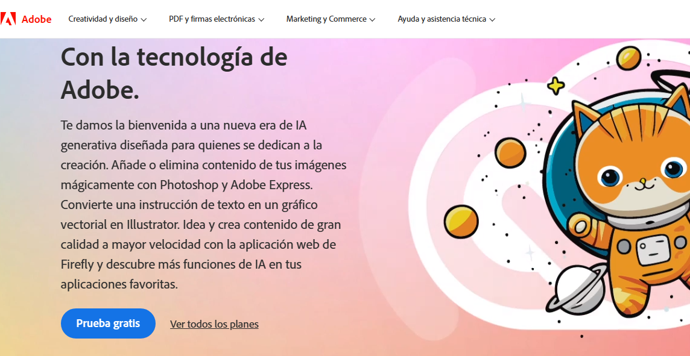
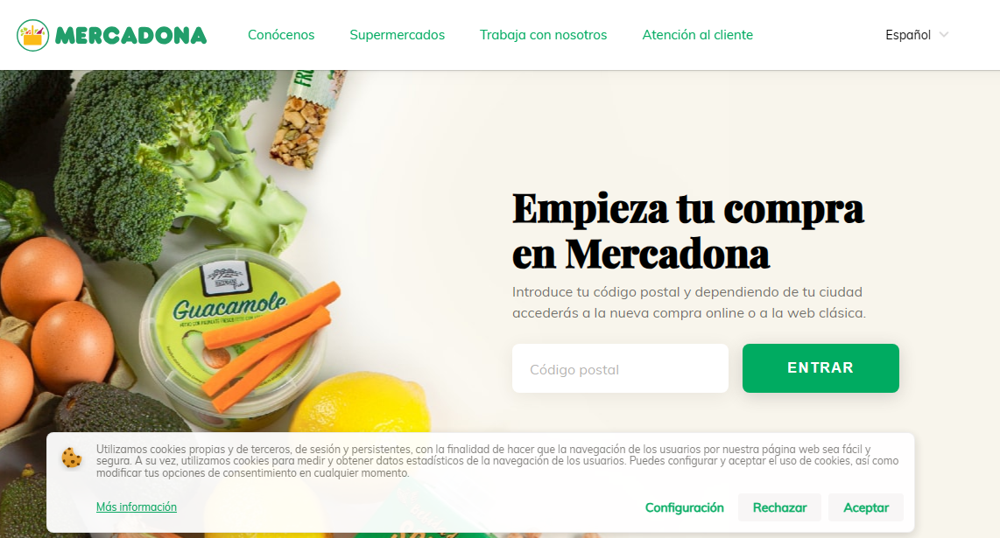
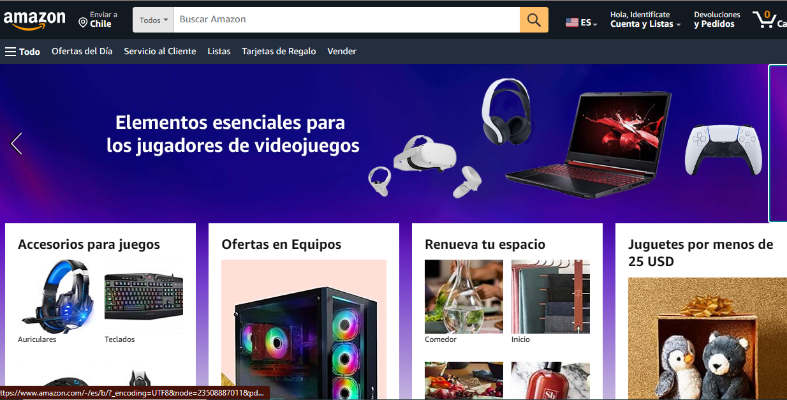

Visual Hierarchy
Adobe uses different text sizes to highlight the most important information. Adobe maintains a consistent color palette
throughout the website to help visitors quickly identify different types of content. For example, red is used for call-to-action buttons,
while gray is used for secondary text.
Proximity
On the Mercadona website for PC, we can see how we group the menu links,
which are navigation options, while the language selection dropdown is more separated
and is not included in the menu links group. In this case, we also group by the proximity principle each block within the page structure.
Contrast
Amazon uses contrast to highlight recommended products, helping users quickly identify
products that might interest them.